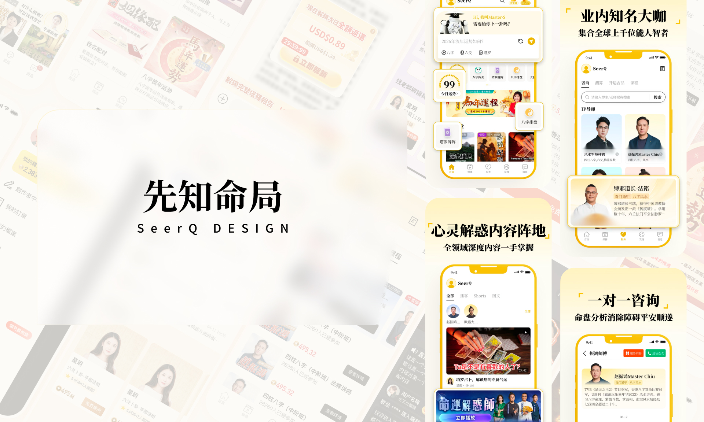
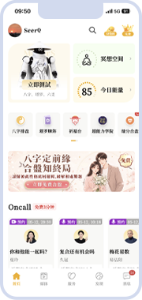
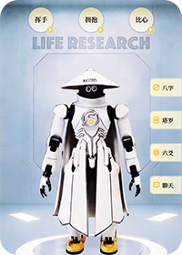

SELECTED WORK
精选作品
从移动产品、品牌官网、专题改版到运营活动，记录完整的设计判断与落地结果。
PRODUCT DESIGN2024 - 2026
先知命局 SeerQ DESIGN
面向全球用户的数字命理产品设计，围绕内容阵地、咨询转化、海外适配与视觉统一，持续迭代产品体验。



WEB DESIGN2025
枫燧堂（香港）PC 端官网
整合法会预约、八字测算、道教文化和公益服务，搭建中式视觉体系与模块化 PC 官网浏览体验。


VISUAL DESIGN2025
运势专题改版
通过视觉升级、体验优化与结构重构，解决命理 H5 视觉杂乱、转化路径模糊与用户信任感不足的问题。


AIGC VISUAL2025 - 2026
运营活动视觉设计
AIGC 赋能海外新年活动视觉设计，从主视觉概念、互动场景到落地页与延展素材，形成完整活动表达。